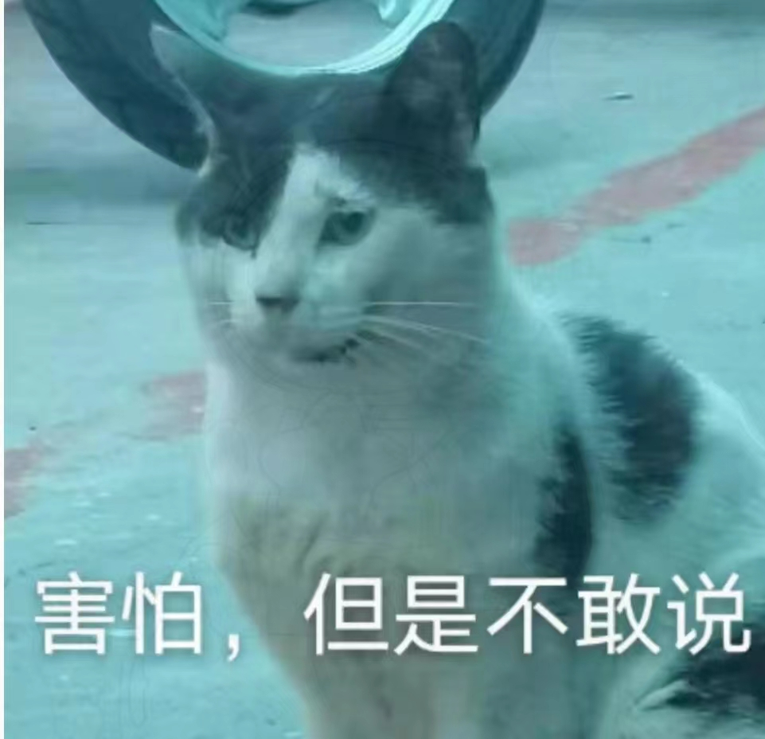
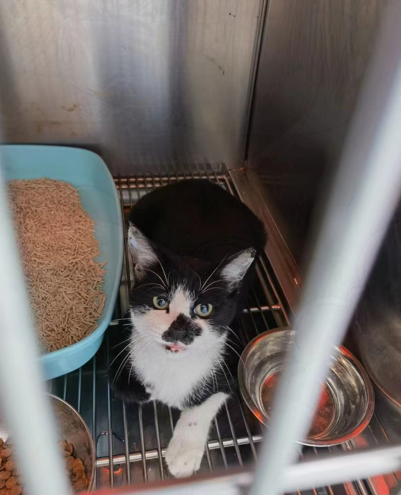
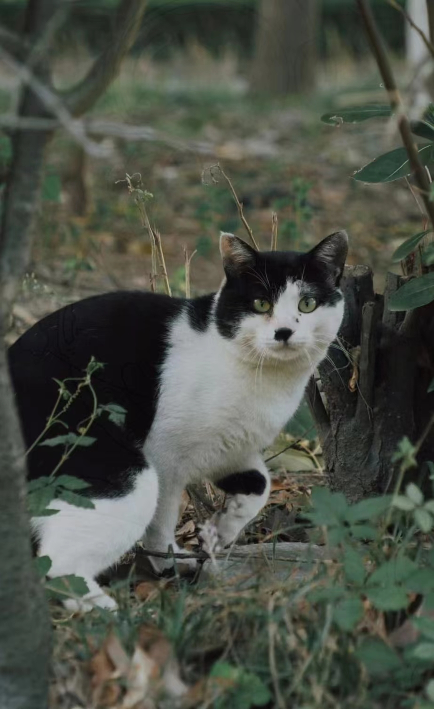

丑爹
性别：公 未绝育
上了年纪的丑爹，三期通吃，默默保护孩子，夜深人静时总能看见他蹲在顺丰快递站外面守护着奶牛和妹妹。对待小猫还是很友好的，看得出来他很孤独，可能是到处蹭饭使他接近人的机会多了，也能在一米之内瞅瞅你到底要给他什么吃的了。

小八嘎
性别：公 已绝育
性格：薛定谔亲人
黑白奶牛色，嘴鼻周围一圈黑色，是移动门保卫室大八嘎的孩子之一。

大八嘎
性别：公 未绝育
长得还算不错的奶牛，很大一个猫。和学校里面所有的猫都不对付，天天和大黑打架，跳跳虎在旁边虚壮声势。